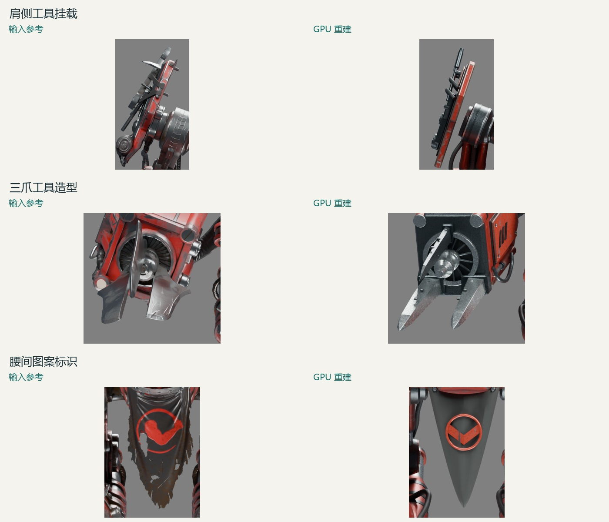

SCV 机甲资产重建与展示片制作
从六方向彩色参考图重建可编辑的机甲资产，再用指定配乐与转场音效，制作一条有声 3D 作品集展示片。
01任务定义
下载全部输入 ↓


六张彩色正交参考图。点击图片可放大；方向遵循附件中的机甲坐标约定。
- 题目背景
- 为一款 SCV 机甲资产制作作品集展示。参考素材具有复杂的座舱、双臂工具、腿足、背部与管线结构，需要从多视角图像中恢复成可复用的三维资产。
- 需要做的事
- 使用 Blender 从零建模，完成材质与贴图；保持造型、比例、结构、配色及材质特征，并自行设计镜头、展示动画和声音，让整体形象与关键部件都能被清楚看见。
- 要求交付
asset.blend、横屏有声showcase.mp4、可修改镜头与音频并重新输出的制作工程及资源，以及说明版本、使用方式、导出方式和署名的README.md。
指定配乐与转场音效
播放器使用适合网页试听的 MP3；输入包保留题目指定的 WAV 原文件。
任务委托原文
# SCV 机甲资产重建与展示片制作
我们准备为一款机甲资产制作作品集展示。请根据附件六方向参考图，使用 Blender 从零重建 SCV 机甲，完成材质与贴图，再使用指定配乐和转场音效制作一条有声 3D 资产展示视频。
重建资产应保持参考中的造型、比例、结构、配色及材质特征。展示片需要让观众看清机甲的整体形象和关键部件细节，并通过镜头组织、展示动画及声音形成完整的观看体验。镜头和视觉风格由你设计。
使用 `audio/industrial_pulse.wav` 作为配乐，并结合提供的 `whoosh.wav`、`hit.wav`、`drop.wav` 安排视觉转场与声音，让剪辑及画面变化配合音乐节奏和音效。可以按展示需要选取配乐片段，自行安排成片时长。
提供的材料：
- `reference/`：正面、背面、机甲左侧、机甲右侧、顶面和底面六张彩色参考图。
- `cameras.json`：参考图的相机参数与坐标约定。
- `scene_setup.json`：参考图使用的灯光及渲染配置；展示片的镜头和灯光可自行设计。
- `audio/`：指定配乐、三种转场音效和来源说明。
- `ASSET-SOURCE.md`：角色参考素材的来源与署名信息。
请按附件坐标约定组织重建资产，将以下内容交付至 `submission/`：
- `asset.blend`：可单独复用、编辑的机甲资产，包含材质和所需资源。
- `showcase.mp4`：适合在作品集网页播放的横屏有声展示片。
- 展示制作工程及所需资源，使客户能够修改镜头和音频后重新输出；如使用制作或导出脚本，请一并提供。
- `README.md`：说明 Blender 版本、各交付物的用途、工程打开方式、成片重新输出方式及素材署名。
难点
- 模型够复杂，拼轮廓糊弄不过去：SCV 机甲有 10 万多个点，带镂空座舱、散热片、机械爪和背部管线，还有做旧掉漆和金属质感，光靠六视图抠轮廓、投影贴图根本还原不出来。
- 完整出片仍要还原关键细节：除了建模，还要通过运镜展示各个部件。整体轮廓接近并不等于还原了工具、装配、局部造型与表面标识，这些细节需要直接对照参考检查。
- 自己听懂纯音乐和音效来踩点：没有文字时间表，只给纯电音和三个音效，模型得自己听出铺垫和高潮，把扫屏、硬切、明暗切换跟音效严丝合缝对上，同时交出的 Blender 工程必须能二次修改和重导。
可解性
- 参考与交付使用相同的三维工具体系：六视图由 Blender 场景渲染，输入还提供统一的相机、坐标和灯光配置，可在相同条件下直接比较重建结果。GPU 可用于加速渲染，建模、材质与镜头方案仍由智能体自行决定。
02评分标准
下载评分复核包 ↓总分 · 满分 100
结构 30 ＋ 外观 30 ＋ 关键细节 30 ＋ 音画 10
几何与图像由固定脚本计算；关键细节、音乐与音效由 Gemini 4 Neon 对照参考及成片评定。工程可用性作为交付门槛，不计分。
复核包包含本轮评分规则、固定指标脚本与参数、公开评审结果和汇总脚本。成片、重建六视图及参考图在本页直接查看。计算说明 ↓ · 查看源码 ↗
比较对象与参考工程
reference-asset.blend 是原始 GLB 导入 Blender、统一坐标与尺寸后的参考工程；asset.blend 是 agent 交付的重建资产。评分从两份工程提取几何，并在相同条件下渲染，比较的是表面与图像。
参考工程仅供评分复核，未提供给被测 agent，也不在题面输入 ZIP 中。六张题面参考图由该工程生成。
参考来源、坐标与文件校验
- 原始 SCV 模型（GLB）导入 Blender，保留独立几何、UV 与材质，生成规范化参考工程。
- 包围盒中心移到原点，统一缩放使最长边为 2；规范化尺寸为 2.000 × 1.845 × 1.652 个场景单位，非米或厘米。+Z 向上，机甲朝 −Y，自身左侧为 +X。
- 添加六方向正交相机和统一灯光，贴图打包进工程。参考与提交均按世界坐标提取求值三角网格，不要求物体名、拓扑或顶点编号相同，不对提交做 ICP、旋转配准或缩放拟合。
SHA-2561b6b49ca858d39f8df675f1c16fc6096600685fe0cf9625291c43db00e7d53b4
参考来源：JohnMesplay / SCV，CC BY 4.0；修改包括坐标规范化、相机、灯光与六向渲染。大文件由同一 GitHub 仓库的 Release 提供。
1. 结构还原 / 30
三维 F1 检查表面在空间中的位置，二维 IoU 检查六个机位的剪影重合。两者各占 15 分。
结构分 ＝ 15 × 可见表面 F1@0.5% ＋ 15 × 六视图平均 IoU
F1：比较对象、采样、距离容差与公式 · 15 分
- 提取表面。从参考与提交工程提取 Blender 求值后的可渲染三角网格，应用物体／实例世界变换后合并。曲线生成的实际网格表面也参与比较。
- 面积均匀采样。每侧合并网格总共采样 50,000 点，随机种子为 20261122。先按三角形面积选择三角面，再在面内均匀取点。
- 筛选可见点。沿六个输入正交机位方向做射线检查；至少在一个方向上属于首次相交表面的点才保留。
- 算双向距离。每个保留点求到对方完整三角表面的最短距离，使用 BVH 邻近候选及 float64 点到三角形计算，不采用最近顶点或点编号配对。
- 判断命中。计算参考模型包围盒对角线 D，以 τ＝0.005D 作为统一距离阈值；距离 ≤ τ 为命中。
P ＝ 提交可见点中距离参考表面 ≤ τ 的点数 ÷ 提交可见点数
R ＝ 参考可见点中距离提交表面 ≤ τ 的点数 ÷ 参考可见点数
F1 ＝ 2 × P × R ÷ (P ＋ R)；P ＋ R 为 0 时 F1 取 0
三维表面分 ＝ 15 × F1P 衡量提交可见表面中有多少接近参考，R 衡量参考可见表面有多少被提交覆盖；调和平均要求两者同时较高，不依赖顶点编号或拓扑一致。
IoU：六个机位如何计算轮廓重合 · 15 分
使用题面六张 1280 × 1280 的参考 PNG，与提交工程按同相机渲染的六张 PNG。每张图以 alpha ≥ 0.5 得到前景剪影 A、B。
单机位 IoU ＝ |A ∩ B| ÷ |A ∪ B|
平均 IoU ＝ 六个机位 IoU 之和 ÷ 6
轮廓分 ＝ 15 × 平均 IoU每个机位等权，不按各视图前景面积再次加权。六视图平均轮廓分与三维表面分相加，得到结构还原分。
2. 外观忠实度 / 30
在固定六机位上比较带材质图像，六视图平均 SSIM 换算为 30 分；展示片自行设计的灯光和镜头不进入这部分计算。
外观分 ＝ 30 × clip(六视图平均 SSIM, 0, 1)
这是本案例约定的计分换算，不代表外观还原百分比或正确率。
统一渲染条件与前景比较区域
SSIM 的空间图、平均方式与得分 · 30 分
SSIM：局部结构、亮度与对比度
Gaussian 加权窗口 11 × 11，σ＝1.5，数据范围 L＝1，使用总体协方差。每位置三个 RGB 通道先求平均，再取前景并集 U 内的空间均值，得到该机位 SSIM，最后对六机位等权平均。
SSIM(x,y) ＝ [(2μxμy＋C1)(2σxy＋C2)] ÷ [(μx²＋μy²＋C1)(σx²＋σy²＋C2)]
C1＝(0.01L)²，C2＝(0.03L)²；本项 L＝1
外观分 ＝ 30 × clip(六机位平均 SSIM, 0, 1)先对六机位等权平均，再将均值截断到 [0, 1] 并乘以 30。这是本案例约定的计分映射，不是外观还原百分比、正确率或经过专家标定的主观质量分。白模只辅助观察几何，本项使用带材质的彩色图像。
3. 关键细节还原 / 30
由 Gemini 4 Neon 自行对照参考图、最终成片与提交资产的统一六视图寻找明确错误。部件与装配、造型特征、材质与表面细节各 10 分。
细节分 ＝ Σ max(0, 10 − 5 × 该项独立明确错误处数)
三项检查范围与扣分规则
- 部件与装配还原 · 10 分
- 检查关键部件是否存在、类型与数量是否正确，以及安装位置、层级和连接关系是否对应参考。
- 造型特征还原 · 10 分
- 检查部件的轮廓形状、弯折、开口、凹槽和边缘结构等造型特征是否对应参考。不测宽厚、长短比例；观看角度或遮挡造成的差异不能直接判为造型错误。
- 材质与表面细节还原 · 10 分
- 检查配色分区、金属或漆层观感、粗糙度与反射特征、掉漆和划痕分布、图案标识是否对应参考。灯光、曝光和观看角度造成的变化不能直接判为材质错误。
每发现一处独立明确错误扣 5 分，单项最低 0 分；证据不足不扣。每处须给出参考区域、成片时间或帧号及可见差异。同一问题跨镜头只计一次，不跨维度重复扣分；成对部件的同一错误合并计数。
4. 音画匹配 / 10
音乐编排评完整展示与配乐的组织关系，音效对应评具体声音与具体视觉事件。两项各 5 个检查，每项满足得 1 分、不满足得 0 分，分别相加；评委为 Gemini 4 Neon。
音乐编排：五个检查条件 · 5 分
- 乐句／段落组织：展示段落与实际 BGM 的乐句或段落组织有明确关联。
- 能量呼应：BGM 的强弱、密度和配器变化与运镜、灯光、景别或展示重心相协调。
- 节奏发展：展示随音乐发展推进；可通过连续运镜、内容揭示和灯光实现，不要求每拍切镜。
- 选段衔接：音乐选段、延续或拼接连贯，没有突兀跳拍或节奏断裂；不要求必须拼接。
- 首尾完整：音乐的进入、结束与画面的开端和收束合理配合。
评委在独立完整上下文中听看成片及同源最终混音，对照原始 BGM；逐项记录时间、听到的 BGM 特征、对应画面及理由，不把外贴音效瞬态代替 BGM 的乐句或能量变化。五项得分相加，音乐编排最高 5 分。
音效对应：脚本定位、定点听看与五项计分 · 5 分
- 定位候选：先对齐最终混音与原始 BGM，拟合局部增益，在原始混音及 BGM 残差上匹配 whoosh、hit、drop，输出候选类型、有效区间、锚点及置信度。残差只用于定位。
- 带上下文核查：将候选区间及前后约 1 秒合成原声核查窗口，保留源时间映射；评委对照原始音效，先确认实际可闻的声音，再判断视觉事件、语义和感知同步。相邻窗口可合并，完整成片另作查漏。
- 复核时差：已确认音效的有效锚点与对应原生帧视觉锚点相减，记录 Δt＝音频锚点−视觉锚点，正值表示声音较晚。whoosh 同时考察运动区间；不以文件起点或最近切镜自动判分。
| 检查项 | 满足得 1 分的条件 |
|---|---|
| S1 · whoosh | 已确认的扫风声与实际运动／转场语义相符。 |
| S2 · hit | 已确认的撞击声对应显现、停顿、切换等明确视觉落点。 |
| S3 · drop | 已确认的低频重落对应视觉重心或能量转折。 |
| S4 · 对齐 | 主要音效的听觉有效点／区间与对应视觉事件在感知上同步，并记录时间证据。 |
| S5 · 可辨与层次 | 三类音效在最终混音中均可辨认、层次适当，不被音乐掩盖或破坏观看。 |
候选不是确认使用次数，未检出不自动判缺失；必须回到原始最终混音。脚本的单声道峰值或无越界样本只作电平检查，不代替混音可闻度判断。五项得分相加，音效对应最高 5 分。
工程可用性门槛如何检查 · 不计分
检查 asset.blend 能独立打开且含真实可编辑几何；搬移交付目录后，所用贴图、库与音频资源仍可解析；规范机位能渲染；成片画面和音轨完整解码；修改相机及音频后，实际重新输出片段。通过门槛不增加质量分。
03测试结果
| 模型 / 框架 | 结构 / 30 | 外观 / 30 | 关键细节 / 30 | 音乐 / 5 | 音效 / 5 | 总分 / 100 |
|---|---|---|---|---|---|---|
| xhigh · Codex · RTX 4090 D | 19.85 | 5.54 | 0.00 | 5.00 | 5.00 | 35.38 |
| xhigh · Codex · RTX 4090 D | 16.78 | 6.12 | 0.00 | 5.00 | 5.00 | 32.90 |
两次独立GPU实验采用同一套现行评分规则。点击模型名称或下方选项，切换该模型的成片、交付、过程及失败分析；本表始终展示两者成绩。
实际交付与裁定
Astra 6.2Astra 6.2 · 总分 35.38 / 100。完成 648 帧 CUDA／Cycles 渲染与有声展示；结构 19.85 分、外观 5.54 分。关键细节三项均为 0 分；音乐编排与音效对应各得 5 分。
| 关键细节维度 | 确认错误数 | 得分 |
|---|---|---|
| 部件与装配还原 | 4 处 | 0 / 10 |
| 造型特征还原 | 3 处 | 0 / 10 |
| 材质与表面细节还原 | 3 处 | 0 / 10 |
分数按未舍入值汇总，显示两位小数。资产独立打开、搬移后资源解析、统一六视图渲染与成片完整解码检查通过。
Astra 6.2 的实际交付成片
运行信息
- 模型与框架
- Astra 6.2 · xhigh · 官方 Codex
- 运行耗时
- 42 分 31.12 秒
- 工具调用
- 152 次
- 模型响应
- 71 次
- 运行环境
- Linux · 4 核 CPU · 8 GiB 主机内存预算 · RTX 4090 D（24 GB）
- 工具版本
- 官方 Codex CLI 0.142.4 · Blender 5.3.0 · Cycles CUDA
从空工程与全新上下文独立完成，未提供旧工程、成片、评分或缺陷反馈；未设置总时长或工具调用次数上限。
04执行过程
Astra 6.2六向观察
对照正、背、左右、顶、底六张参考，整理主体比例、座舱、双臂工具、腿足与背部的空间关系。
Blender 分件程序建模与材质
以程序生成机体和部件，组织可编辑资产，并构建红色装甲、金属边框、深色机械结构及表面磨损材质。
六组镜头与灯光舞台
依次展示整机、工具、座舱、背部、腿足与整机总成，在摄影棚灯光下组织整体与部件特写。
配乐选段、分轨音效与图版
选取指定配乐片段，编排 whoosh、hit、drop 音效，并将镜头、视觉转场与展示图版纳入成片结构。
CUDA 完整渲染与 VSE 导出
自主选择 Cycles CUDA 与 GPU 降噪，完整渲染 648 帧，再由 Blender 视频序列编辑器合成图版、转场和声音，输出 27 秒展示片。
交付工程
提交独立资产、成片、展示制作工程与资源，以及修改镜头、音频和重新导出的说明。
成片镜头组织
点击时间段可定位到上方成片中的对应镜头。
05失败分析
Astra 6.2结构与外观：整体接近，细部有明显偏差
重建恢复了红色重装机甲、中央座舱和双臂工具的主要识别特征，但座舱内部、腿足层次及管线连接被简化。固定机位对照显示，大轮廓的接近仍不足以恢复内部层次与三维细节。


- 部件：肩侧工具挂载、驾驶舱操纵装置与背部圆口内部结构出现缺失或错替。
- 造型：工具、腰间垂片和背部中央舱体的辨识特征与参考不一致。
- 表面：徽标、文字编号与座舱顶罩纹理未忠实还原。
关键细节：部件、造型与表面还原不足
Gemini 4 Neon 对照参考、成片与统一六视图，确认部件与装配 4 处、造型特征 3 处、材质与表面细节 3 处独立错误。每处扣 5 分，三项均扣至 0 分。
部件与装配还原 · 4 处错误 · 0 / 10
| 成片定位 | 确认差异 |
|---|---|
| · 帧 480 | 肩侧工具挂载被统一短杆架替代，原参考的非对称工具组未还原。 |
| · 帧 240 | 驾驶舱中央操纵杆柱缺失，被扁平仪表箱替代。 |
| · 帧 336 | 背部双圆口内部被改写为外露径向叶轮。 |
| · 帧 432 | 腿后缸体下方的喇叭形喷嘴缺失或错替。 |
造型特征还原 · 3 处错误 · 0 / 10
| 成片定位 | 确认差异 |
|---|---|
| · 帧 144 | 三爪钳瓣的弧弯轮廓、根部凹口与中心轴头形状被改写。 |
| · 帧 60 | 腰间垂片的撕裂边缘和开口被整齐三角形轮廓替代。 |
| · 帧 336 | 背部中央舱体的圆弧护罩与切面球罩被棱角盒体替代。 |
材质与表面细节还原 · 3 处错误 · 0 / 10
| 成片定位 | 确认差异 |
|---|---|
| · 帧 60 | 腰间红圈内的徽标图案被改写。 |
| · 帧 240 | 机身原有文字标识遗漏，并新增自编编号。 |
| · 帧 240 | 座舱橙色顶罩缺少参考中的六边形蜂窝网格纹理。 |


音画：音乐编排与音效对应均得满分
Gemini 4 Neon 依据完整成片、原始混音、原配乐及三个原音效评定：音乐编排五项均满足，得 5 / 5；音效语义、感知同步与混音层次五项均满足，得 5 / 5。
- 音乐编排 · 5 / 5
- 乐句与段落组织、能量呼应、展示节奏、选段衔接、首尾完整五项通过。
- 音效对应 · 5 / 5
- 确认 2 处 whoosh、3 处 hit、1 处 drop；主要音效与转场、视觉落点及整机揭示相符，三类音效均可辨。